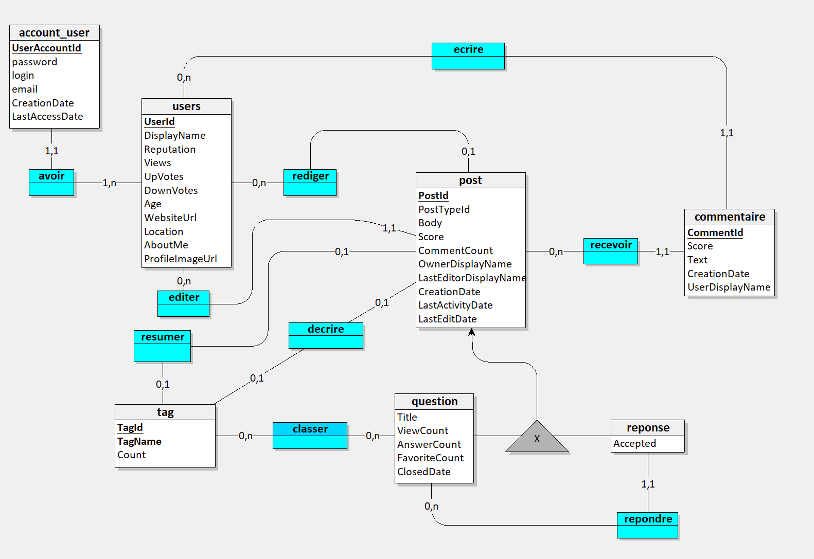

Migration PostgreSQL / MongoDB
Un ETL en Python pour migrer des données entre PostgreSQL (relationnel) et MongoDB (NoSQL documentaire), à partir du jeu de données public Stack Exchange, en mettant en évidence les différences de représentation selon le paradigme de stockage.
Python
ETL
PostgreSQL
Relationnel
MongoDB
NoSQL
En cours
Statut
Problème
Une même information se représente très différemment en base relationnelle et en base NoSQL ; migrer des données de l'une à l'autre demande des règles de transformation claires.
Solution
Un outil ETL en Python qui migre les données Stack Exchange dans les deux sens entre PostgreSQL et MongoDB, via un modèle d'échange intermédiaire et des contrôles de validation.
Impact
Une migration automatisée et vérifiable entre deux paradigmes de stockage, et une lecture concrète de leurs différences de modélisation.
À propos du projet
Projet de BUT (SAE VCOD), en cours : la conception d'un mini ETL pour migrer des données entre PostgreSQL (modèle relationnel) et MongoDB (modèle documentaire NoSQL). Il s'appuie sur le jeu de données public Stack Exchange (utilisateurs, publications, commentaires, tags) et met en évidence la façon dont une même information se représente différemment selon le paradigme de stockage.
Données
Jeu de données public Stack Exchange, fourni au format XML (Users, Posts, Comments, Tags) : utilisateurs, questions et réponses, commentaires et tags, avec leurs relations. Ces données servent de base aux deux modélisations et aux migrations.
Modélisation des données
Deux modélisations sont proposées à partir des mêmes données : un modèle relationnel et un modèle documentaire adapté à MongoDB, reliés par une représentation d'échange intermédiaire indépendante des deux SGBD. Le modèle conceptuel (MCD) de la version relationnelle :

MCD du jeu de données Stack Exchange (cliquer pour agrandir).
Missions
Le projet se découpe en plusieurs missions, de la modélisation à l'outil de migration :
- Deux modélisations des mêmes données : un modèle relationnel (MCD ci-dessus) et un modèle documentaire pour MongoDB.
- Un modèle d'échange intermédiaire, indépendant de PostgreSQL et de MongoDB, qui sert de pivot aux migrations.
- L'analyse des problèmes de migration vers PostgreSQL et la définition des règles de transformation.
- Un ETL en Python : migrations dans les deux sens (PostgreSQL ↔ MongoDB) et import depuis les fichiers XML.
- Des contrôles de validation pour vérifier que les données ont été correctement transférées.
Compétences démontrées